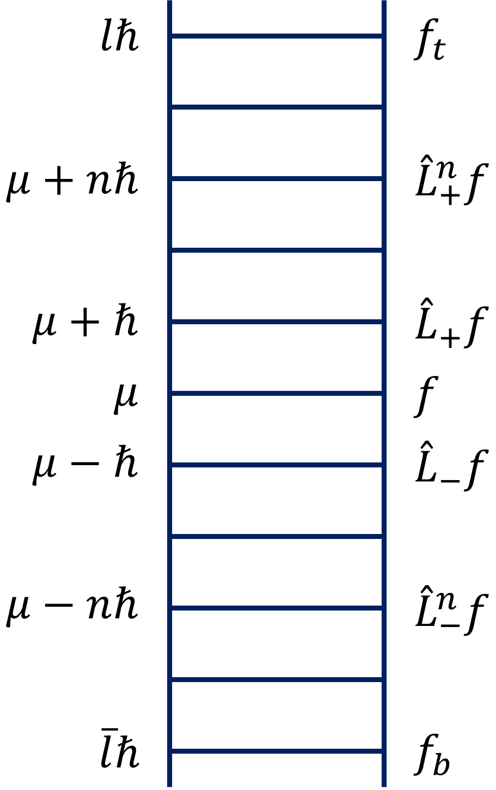

氢原子有一个基本不动的质量较大的带正电\(e\)的质子，我们将其放在坐标原点，通过正负电荷相互吸引作用，在其周围束缚着一个质量很小的带负电\(-e\)的电子绕其运动.
经典上，一个粒子相对于原点的角动量为：
前置知识
轮换性来源于列维-奇维塔完全反对称张量.
它在三维空间内存在，但不是由张量引起的（可能的原因是顺序是人为规定的）
角动量的基本对易关系：
可以期望找到\(L^2\)与\(L_z\)（或\(L_x,L_y\)）的共同本征态.
$$\hat L^2f = \lambda f$$ $$\hat L_zf = \mu f$$\(\hat A\)的本征值是有固定选择的.
一个本征值对应无数个态（一个态只对应一个本征值），两个标签确定唯一的量.
注意，本征函数是通过上式求解的，可能会很粗浅地认为\(f\)可以直接约掉，实际上算符带来了\(\partial/\partial\)，因此上式实则是微分方程.
为什么对易就可以找到共同的本征态？为什么要找共同的本征态？
[令]
$$\hat L_\pm = \hat L_x\pm i\hat L_y$$有：
[结论]若\(f\)为\(\hat L^2\)与\(\hat L_z\)的本征函数，\(\hat L_\pm f\)也是.
\(\hat L_\pm\)为\(\hat L^2\)本征值同为\(\lambda\)的一个本征函数.
\(\hat L_\pm f\)为\(\hat L_z\)的一个本征函数，其本征值为\(\mu\pm \hbar\).
称\(\hat L_+\)为升阶算符，其使\(L_z\)的一个本征值增加了一个\(\hbar\).
称\(\hat L_-\)为降阶算符，其使\(L_z\)的一个本征值减少了一个\(\hbar\).
函数是可以带算符的.
对于一个给定的\(\lambda\)值，我们可以得到一个态的“梯子”，每个“阶梯”与相邻梯级，间隔为\(L_z\)的本征值，相差一个\(\hbar\).
升高用升阶算符，降低用降阶算符.

但是升高与降低的过程不可能永远持续下去，因为这样会达到一个\(z\)分量超过总量的态，而这是不可能的.
一定存在一个最高的阶梯\(f_t\)，使得：
$$\hat L_+ f_t = 0$$由于某些理由，也存在一个最低的阶梯\(f_b\)，使得：
$$\hat L_- f_b = 0$$这里的0说明是0矢量，即本征函数为0矢量，物理上不存在此态.
\(\hat L_z\)在\(f_t, f_b\)态的本征值分别为\(\hbar l\)与\(\hbar\bar l\).
由于\(\lambda\)为\(\hat L^2\)的本征值，因此\(\lambda\geq0\)恒成立.
$$\therefore \mu_{\max2}\lt \mu_{\min2}\lt 0\lt \mu_{\max1}\lt\mu_{\min1}$$ $$\because \mu_{\max}\gt \mu_{\min}$$ $$\therefore\quad\begin{align} &\mu_{\max} = \frac{-\hbar + \sqrt{\hbar^2 + 4\lambda}}{2}\\ &\mu_{\min} = \frac{\hbar - \sqrt{\hbar^2 + 4\lambda}}{2} \end{align}\Rightarrow\mu_{\max} = -\mu_{\min}$$ $$\because \mu_{min} = \mu_{max} - N\hbar,\quad N\in\mathbb{N}$$ $$\therefore \mu_{max} = \frac{N}{2}\hbar,\quad\mu_{\min} = -\frac{N}{2}\hbar$$[令]
$$\frac{N}{2} = l,\quad -\frac{N}{2} = -l = \bar l$$ $$\therefore \mu_{max} = \hbar l,\quad\mu_{\min} = \hbar\bar l$$这里的\(l,m\)与上一节勒让德函数的是同一个概念.
即以\(L_z\)的最大量子数\(l\)表示\(L^2\)的本征值.
分立的，无量纲的纯数（整数或半整数）.